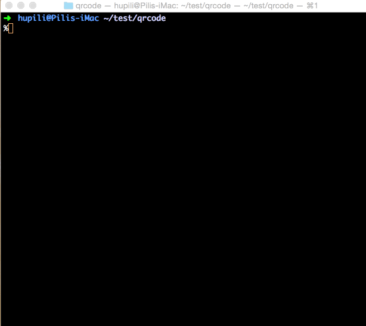

For journalists who do not code, after reading this article, you will master 15 one-line commands that can help you handle complex problems in seconds.
Initium Lab has collected various command line tricks as we hack journalism with technology. Here is our editor’s choice so far including: image processing, video processing, PDF manipulation, social network hacking and other useful one-liners. Just open your Terminal, and follow the steps.
Image Processing
Resize Images
The convert command from ImageMagick toolset can help one quickly process images.
This line resizes input.png to a width of 200px (with aspect ratio preserved) and generate output.png.
1 | convert input.png -geometry 200x output.png |
Generate GIF from a Series of Images
First prepare the *.gif files for each frame and put them under the current dir. Run this line:
1 | gifsicle --loopcount -d 50 *.gif > m.gif |
m.gif is the animated output. Change -d to adjust the animation speed. --loopcount means loop forever.
Video Processing
Add Subtitles in a Batch
We make videos or animations to make our works better understood. Adding subtitles is usually time consuming task especially if one wants to generate multi-language versions. It is rather inefficient to operate in GUI software like After Effect or Premier. The command line tool ffmpeg can help.
Step 1: Write the LRC file. One sample is given as follows:
1 | [00:00.00] 廿一世紀立會網絡 |
Step 2: Convert LRC file to ASS file
1 | ffmpeg -i subtitle.lrc subtitle.ass |
Step 3: Attach subtitle to video stream
1 | ffmpeg -i video.mp4 -vf ass=subtitle.ass video-subtitled.mp4 |
This is one sample frame with subtitle added:
The task-force of our landmark project Legco used this trick to accelerate prototyping and iterating the animation. You can find the Cantonese Version and English Version on our YouTube channel.
Note: libass should be installed with ffmpeg.
Machine Generated Voice-Over
Turn on volume and enter the following line:
1 | say 'Initium Lab pushes the limit of journalism with technology' |
This technique/tool is used in one of our News Tool, news2video. It converts a news webpage into a video.
You can find the codes on GitHub and demo video on YouTube. Same method is used to add English Voice-Over to HK Legco Animation on our YouTube channel.
Convert Videos to GIF
Video is a common media nowadays but it can only be shared/ re-played in certain environment. It is useful to turn videos into gif images so that they can be easier distributed.
Suppose you have input.mp4.
Turn it into a series of png files in png folder:
1 | mplayer -ao null -vo png:z=1:outdir=png -vf scale -zoom -xy 600 input.mp4 |
Combine those png files into one gif file:
1 | convert +repage -fuzz 1.6% -delay 1.7 -loop 0 png/*.png -layers OptimizePlus -layers OptimizeTransparency tmp.gif |
Optimise the size and quality of output gif.
1 | gifsicle -O3 --colors 256 tmp.gif > output.gif |
You can refer to the complete script here.
PDF Manipulation
We journalists deal with a lot of PDF files everyday. pdftk is the swiss army knife for batch PDF processing.
Combine Many PDFs Files into a Single File
This combines all PDF in current folder into one file called all.pdf:
1 | pdftk *.pdf cat output all.pdf |
Excerpt a Portion of Pages from a PDF File
This will excerpt page 1 and page 2 into new file called page1-2.pdf:
1 | pdftk input.pdf cat 1-2 output page1-2.pdf |
Rotate a PDF Page
This rotates a page upside down:
1 | pdftk input.pdf cat 1-enddown output input-rotated.pdf |
Convert Images to a Single PDF
Sending a lot of unordered photocopies directly over network is not easy for future use. One can combine the images into one large PDF file.
First, use convert to turn images into PDF files. Suppose you have two images page1.png and page2.png.
1 | convert page1.png page1.pdf |
Then you use pdftk to concatenate those files
1 | pdftk page1.pdf page2.pdf cat output all.pdf |
A script wrapper can be found at:
https://github.com/initiumlab/images-to-single-pdf
Batch Unlock PDFs
Suppose you have a locked PDF file named 2008S1.pdf. Install the tool qpdf first. (e.g. brew install qpdf) and unlock the file like this:
1 | qpdf --decrypt 2008S1.pdf 2008S1-dec-by-qpdf.pdf |
A script wrapper can be found at:
https://github.com/initiumlab/unlock-pdf
Social Network Hacking
To improve the dissemination of the content you spent months building, social network is something you can not avoid. Here are some small tricks that show you how to play with social networks more efficiently. Those are still one-liners, except that they are in your browser’s “developer console”.
Invite All Friends on Facebook in Two Steps (Chrome)
Go to the Facebook page you want to invite your friends to like, say https://www.facebook.com/theinitium . Click “Invite friends to Like this Page”. You’ll see the following dialogue.

Follow the two steps to invite your friends:
- Open Chrome Developer Console by “Command+Option+J” or “Control+Shift+J”
- Copy-and-paste the code
Array.prototype.slice.call($$("._1sm"), 0).map(function(a){a.click()})into the Console and hit enter.
After a while, the friends shown on that page is invited. You can iterate the two steps to invite all your friends. Or, you can first scroll down to the bottom of that friend list and invite all in just one shot.
Batch Follow People on Twitter
Go to one’s follower or following page:
- Open Chrome Developer Console by “Command+Option+J” or “Control+Shift+J”
- Copy-and-paste the code
$('.user-actions-follow-button span [class="Icon Icon--follow"]').filter(':visible').click()into the Console and hit enter.
You will follow all the users shown on that page.
Misc
Generate A Series of Test Files
Sometimes, it is useful to generate a series of files and hide your key information in the files or in the sequence. The following command helps you to generate 10 *.md files with the content “xx{}” where “{}” ranges from 1 to 10.
1 | seq 1 10 | xargs -I{} sh -c 'echo xx{} > {}.md' |
Mirror a Website in One Line
During the Hong Kong District Council (Disco) Election 2015, we compiled a full database of Disco elections from 1999 all the way to 2015. This is a very large data collection campaign which involves aggregating heterogeneous data from different sources. One source is the official website. For example, 2011 election results can be found from page: http://www.elections.gov.hk/dc2011/chi/results.html .
Instead of downloading sub-pages separately, wget can save us time in one line:
1 | wget -r http://www.elections.gov.hk/dc2011/chi/results.html |
It turns out what we get is more than original 18 region HTML pages. wget recursively download the whole site and we find some Microsoft Excel files corresponding to those HTML page. We avoided manual input or working from an intermediate result.
HK Legislative Council (Legco) Election will be another major event recently. To assist our researchers, we want to get all the PDF files from the website. -A (accept pattern) or -R (reject pattern) options can help us filter specific file type:
1 | wget --mirror -A.pdf http://www.elections.gov.hk |
Generate QR Code in One Line
When we distribute our works offline, it is usually very helpful to include a QR Code which links to the online/ digital resources. Using the open source qrencode command, we can generate QR codes quickly in a scripting way.
Sample usage:
1 | qrencode 'https://theinitium.com/' -o initium.png |
Demo:

Note: There are options -s and -l to adjust image size and correction level, respectively.